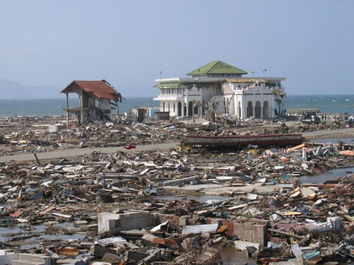

Earthquake in Indian Ocean, off coast of Sumatra
Occurred on December 26, 2004, at 07:58:53. Off the west coast of northern Sumatra, Indonesia. Estimated at magnitude 9.2~9.3, making it one of the strongest earthquakes in recorded history - second only to the 1960 Chile event. A megathrust earthquake, triggered by rupture along the fault between the India (Indo-Australian) and Burma tectonic plates.
Key Facts About the Earthquake
- Date: December 26, 2004
- Time: 07:58:53 local time
- Magnitude: 9.1-9.3 (third largest ever recorded)
- Epicenter: Off west coast of northern Sumatra
- Depth: 30 km (19 miles)
- Duration: 8-10 minutes
- Fault Length: 1,600 km (990 miles)
Tsunami Details
- Generated massive tsunami waves up to 30 meters (100 feet) high
- Waves reached shores in 2 hours to over 7 hours after earthquake
- Tsunami traveled at speeds up to 800 km/h (500 mph)
- One of the deadliest natural disasters in recorded history
- Led to creation of Indian Ocean Tsunami Warning System
Human Impact
- 227,898 people confirmed dead
- 1.7 million people displaced
- 14 countries affected across two continents
- Estimated $15 billion in damage
- Largest international relief effort in history
Countries Most Affected
Indonesia
Sri Lanka
India
Thailand
Somalia
Maldives
Malaysia
Myanmar